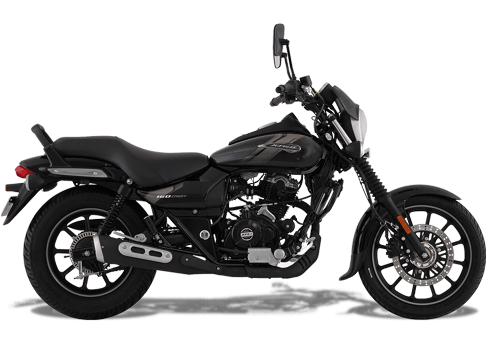
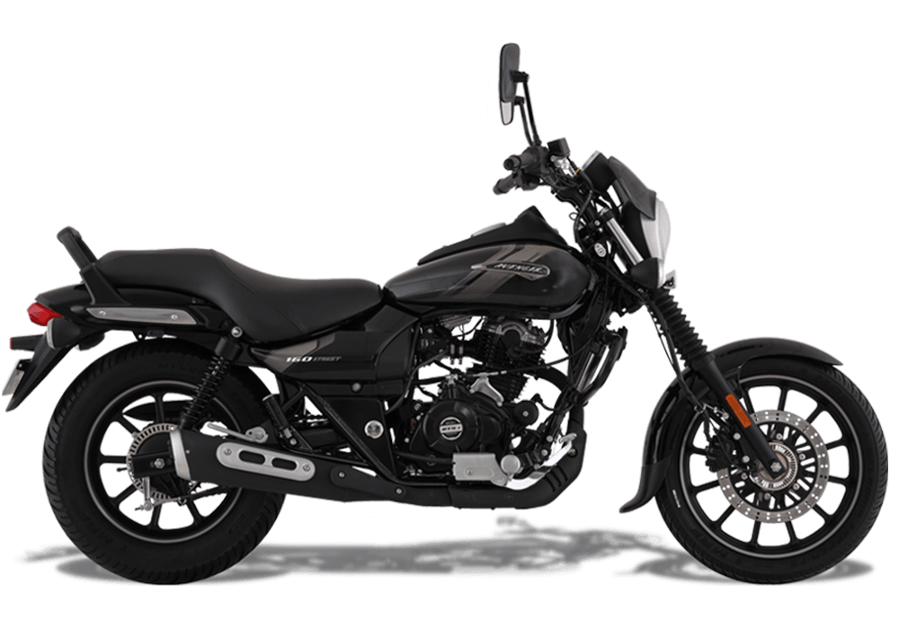

Bajaj Avenger Street 160
₹ 1,16,000
Bajaj Company is introducing a new Bike in 2023 which is Bjaj-Avenger-Streer-160. You can select the color of your bike which you want. Performance: Avenger 160 Street is your best city companion with its twin spark, DTS-i fuel injected air-cooled engine that offers a perfect combination of refinement, power and torque. Design: Command undivided attention with Avenger 160 Street that flaunts Cruiser-styled Sportster design. Thanks to its low and long profile, this bike is your best companion for everyday city riding. Comfort: Premium, low slung and wider seats with street control handlebars give a laid-back riding position. Mileage: The Mileage of the Bajaj Avenger Street 160 is 45 kmpl. Safety: Stay in charge with our ultra-responsive single channel ABS in combination with a 280 mm front disc brake. Cruise in your city on the Avenger 160 Street with complete confidence!.
Perchase Now